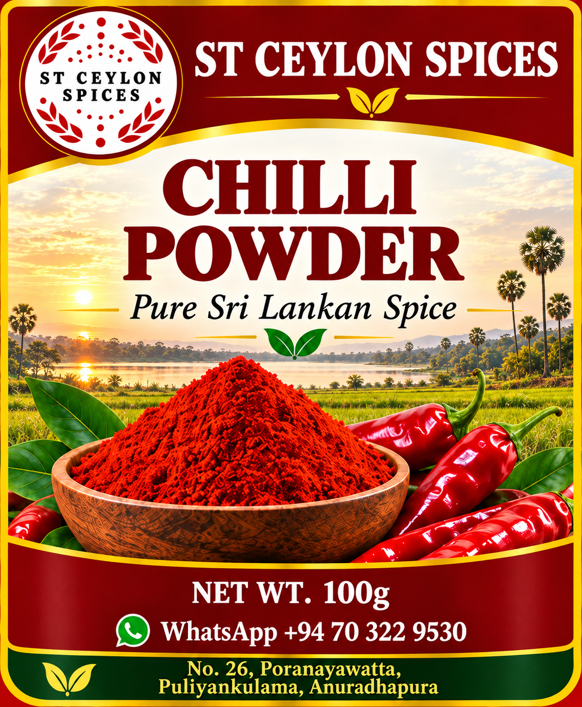
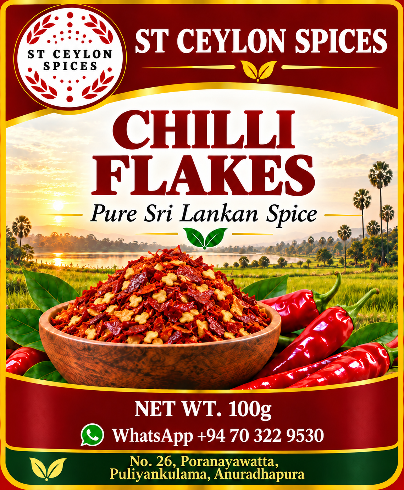
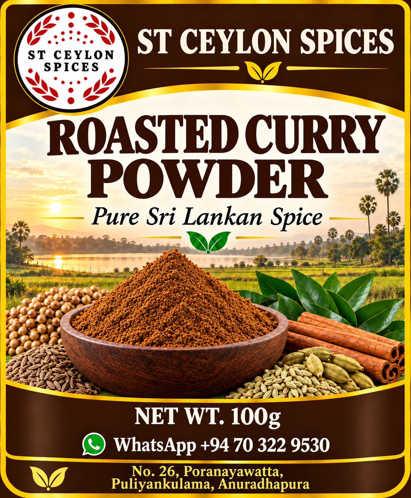
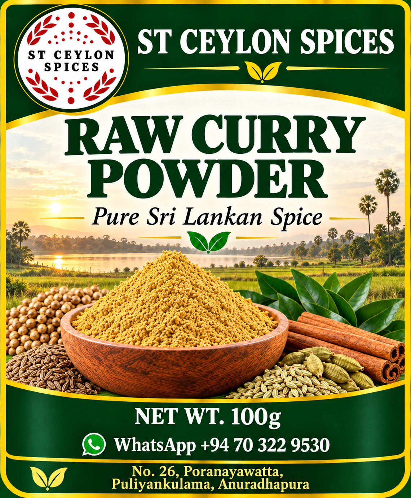

Bring colour, aroma and a rich spicy flavour to your favourite dishes.
Authentic Products from Sri Lanka
Discover the natural flavours and traditional goodness of Sri Lanka with ST Ceylon Products. Bringing local quality and authentic Ceylon products closer to you.
Explore Our Products Contact UsWe celebrate Sri Lankan heritage through spices, grains, everyday food essentials and herbal products. Explore our product categories and contact us for product information and orders.
Traditional Sri Lankan spices for authentic flavour in every meal.

Bring colour, aroma and a rich spicy flavour to your favourite dishes.

A convenient choice for curries, sambols and spicy recipes.

A traditional roasted Sri Lankan curry spice blend.

A versatile spice blend for preparing traditional curries.
A familiar kitchen spice used in many Sri Lankan recipes.
Explore cinnamon, pepper, cardamom, cloves and other spices.
Everyday essentials for Sri Lankan kitchens and family meals.
Explore rice varieties for everyday meals and traditional recipes.
Flour essentials for preparing a variety of home-cooked foods.
Discover mung beans and other grains and pulses for your pantry.
Essential pantry products for traditional meals and daily cooking.
Discover Sri Lankan herbal traditions and familiar herbal products.
A traditional Sri Lankan herb available in selected product forms.
Discover curry leaf products inspired by Sri Lankan food traditions.
Traditional herbal flower products enjoyed in Sri Lanka.
Explore selected herbal products and traditional herbal tea varieties.
Discover our range of traditional snacks and sweets.
Crunchy snacks for everyday enjoyment.
A selection of sweet treats for all occasions.
A traditional sweet snack.
A crunchy snack for sharing.
Sweet treats in different varieties.
For product information and orders, contact us on WhatsApp.
Chat with Us on WhatsAppWe look forward to hearing from you!